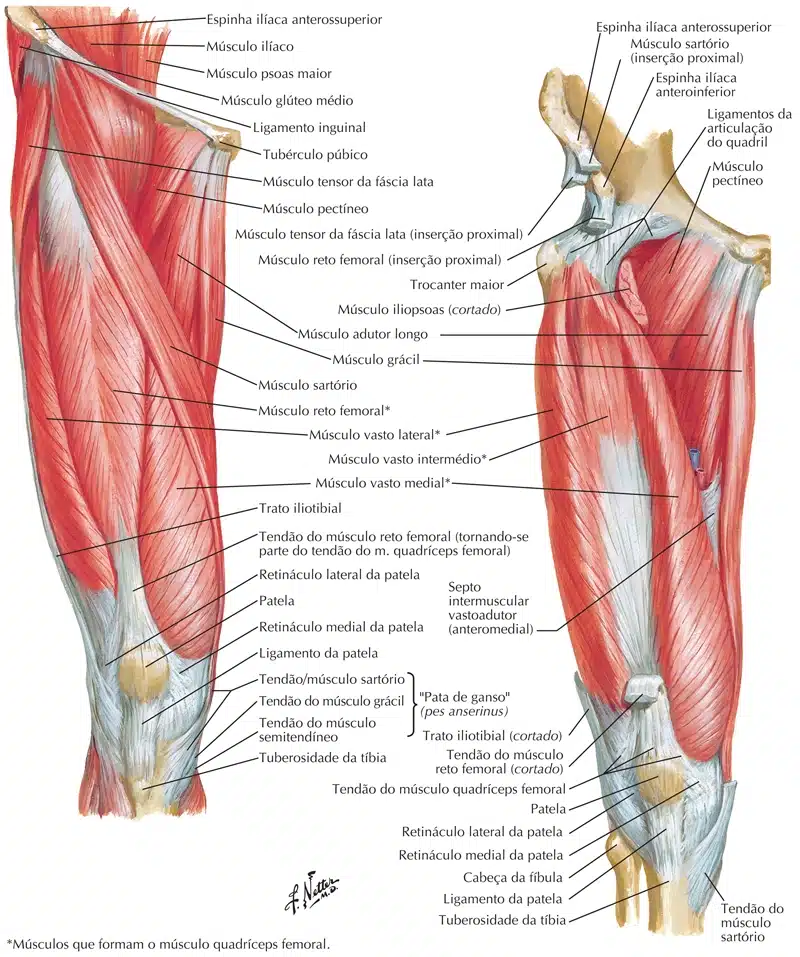
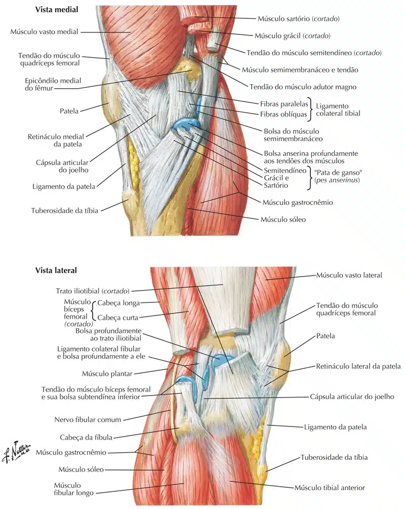

O joelho é uma das articulações mais complexas e sobrecarregadas do corpo humano.
Essa articulação, composta pelos ossos da tíbia, fêmur e patela, é suportada por uma rede de ligamentos, tendões e, é claro, músculos.
Neste texto, exploraremos a anatomia dos músculos do joelho e seu papel crucial na saúde e funcionalidade desta importante articulação.
Os principais músculos do joelho são:
Quadríceps
O quadríceps é um grupo muscular volumoso localizado na região anterior da coxa.
Ele é composto por quatro músculos: reto femoral, vasto lateral, vasto medial e vasto intermédio.
O quadríceps é responsável por estender o joelho, ou seja, retornar à posição após a flexão, como quando nos levantamos de uma cadeira ou damos um chute.

NETTER: Frank H. Netter Atlas De Anatomia Humana. 7 ed. Rio de Janeiro, Elsevier, 2018.
Isquiotibiais
Os isquiotibiais são um grupo de três músculos localizados na região posterior da coxa: o bíceps femoral, semitendinoso e semimembranoso.
Esses músculos desempenham um papel crucial na flexão do joelho e também na rotação da tíbia.
Eles são especialmente ativados durante movimentos como flexão de perna e corrida.
NETTER: Frank H. Netter Atlas De Anatomia Humana. 7 ed. Rio de Janeiro, Elsevier, 2018.
Pata de Ganso
É um grupo composto pelos tendões dos músculos sartório, grácil e semitendíneo e está localizado na parte medial do joelho.
Ele desempenha um papel importante na estabilização da articulação e na contribuição para movimentos de flexão e rotação.

NETTER: Frank H. Netter Atlas De Anatomia Humana. 7 ed. Rio de Janeiro, Elsevier, 2018.